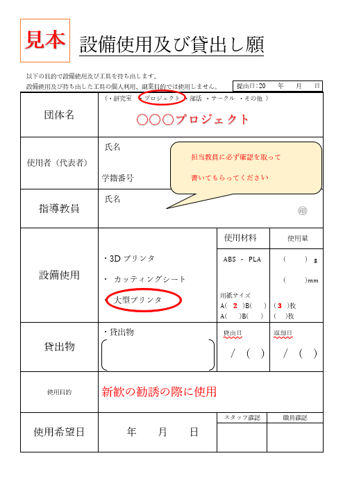
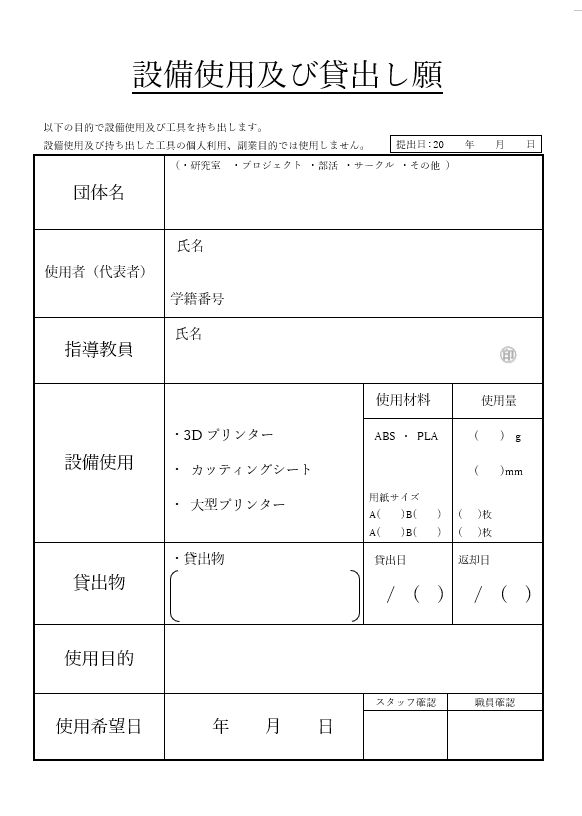

実力調査
このテストでは、現時点でのみんながどれだけできるかを確認します。
ネットなどで調べながらつくってもかまいません
ディスコードの「hp-参考サイト」にも参考になりそうなサイトはおいとく
このページ（ハイパーリンク先も込み）を再現しようとしてみてください。
使用していい言語は「HTML」と「CSS」とします。
締め切りは10月5日 13:00までとします。
完成してなくても提出してください。
参考書的なのが見たければコバヤシまで。何冊かは持ってます。
※ここまでの内容も作ること
右上のメニューからページ内の各内容に飛べるよ
①ダウンロードボタン
以下のようなファイルをダウンロードできるボタンを作ろう。
※ボタンのデザインはすきなもので良い


②ハイパーリンク
現行の大阪産業大学HPに飛べるリンクをつくろう
※ボタンのデザインはすきなもので良い
大阪産業大学
③配置
この文章は左寄せ
この文章は中央寄せ
この文章は右寄せ